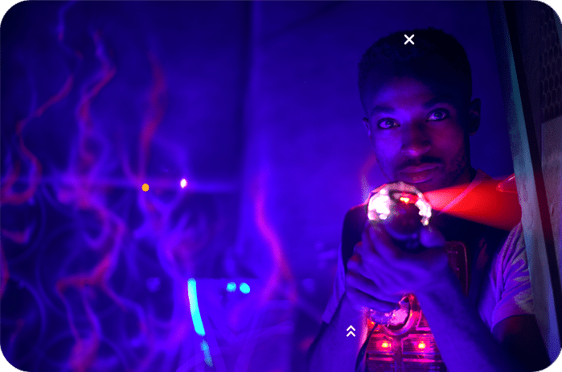
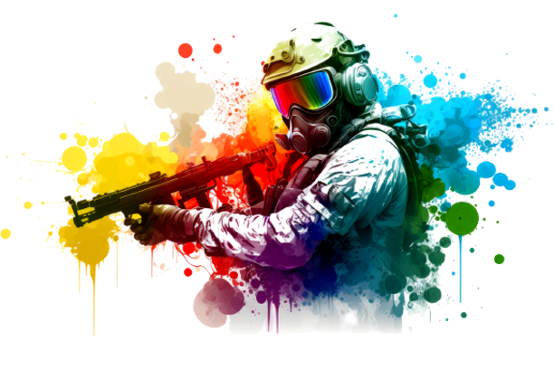
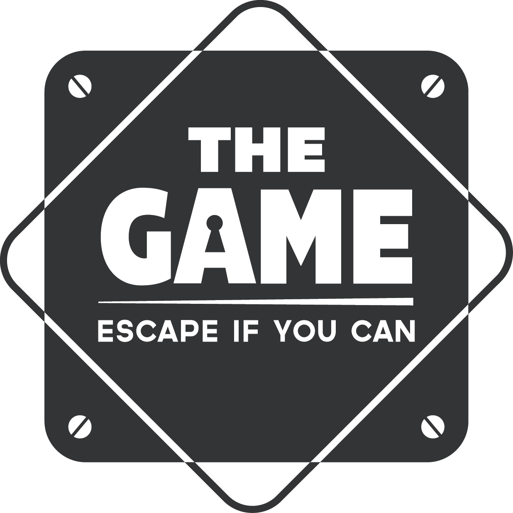
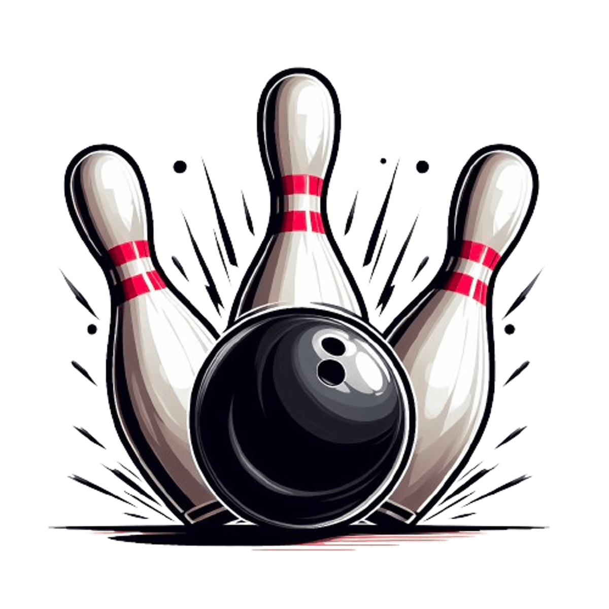
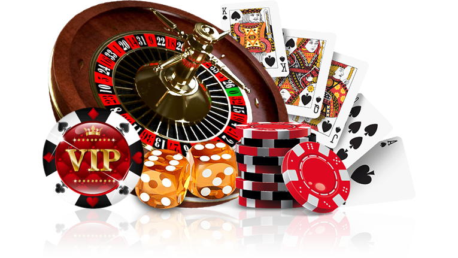

Realité virtuelle
Qu’est-ce que la réalité virtuelle? Il s’agit d’une technologie qui est composé d’un casque
que vous devrez mettre sur le visage et de manette de dernière génération qui vous plongeront
dans des mondes virtuels ultra-réalistes. Que vous souhaitiez explorer des univers fantastiques ou
participer à des missions de survie futuristes, vous serez totalement immergé dans l'aventure
grâce à notre espace de jeu. Les décors qui sont combinés avec la réalité virtuelle vous
permettront de ressentir ce que vous voyez dans ce monde virtuel.
Attention, cette activité peut provoquer un mal de transport dans certains cas, si jamais vous
ressentez une gêne, nous vous transférons dans l’un de nos verses pour continuer l’aventure.
Laser game
Le laser game est un jeu de tir interactif qui utilise le principe de la lumière et du laser pour
affronter ses ennemis. Pour cela, chacun des joueurs doit porter des cibles qui seront positionnées
sur leurs gilets pare-balles. Vous aurez plusieurs cibles à abattre en plus de l’équipe adverse,
comme des drones ou des décors du jeu qui pourront vous faire gagner plus de points à votre
équipe. L’originalité dans tout ça ? Dans notre laser game, vous aurez plusieurs grades et actions
à faire avant la fin du temps réglementaire. Et le plus intéressant, c’est que vous pourrez trahir
votre équipe en passant dans l’équipe adverse en récupérant quelques items. Attention, cette
activité n’est pas adaptés pour tous, elle reste une activité qui utilise beaucoup de lumière et de
son. Si jamais vous êtes sujette à des crises d’épilepsie ou bien que vous soyez sensibles à cela,
nous vous prions de nous contacter pour vous proposer la même activité mais sans les lasers.

Enfilez votre équipement et plongez dans l'action. Jouez en équipe pour remporter
la victoire dans nos arènes thématiques, ou trahissez vos amis pour des affrontements stratégiques.
Paintball
Le paintball est un sport où les joueurs s'affrontent en utilisant des pistolets tirant des billes de peinture.
Le but est d'éliminer ses adversaires en les aspergeant de peinture, tout en protégeant notre propre base. Ce jeu peut se jouer en équipe ou en solo.
Certains objectifs seront donnés à certains joueurs de façon aléatoire, ce qui pourra provoquer des trahisons. À vous de déjouer votre propre équipe ou bien le traître pour gagner votre manche.

Escape game
Un escape game est un jeu d’aventure immersif où les participants sont enfermés dans une pièce thématique et doivent résoudre des énigmes, trouver des indices et déchiffrer des codes pour s'échapper dans un temps limité.
Ce jeu repose sur la reflexion et la créativité pour résoudre les défis et accomplir les objectifs.
Ce qui nous démarque de nos concurrents, c'est la présence d'acteurs et la possibilité de faire un escape game en réalité augmentée.

Bowling et jeu d arcade
Bowling
Le bowling est une activité sportive dont le but est de lancer une boule sur une piste pour renverser dix quilles disposées en triangle. Le but du jeu ? Faire le plus de points possible !
Vous pouvez également essayer le mode hardcore : celui-ci inclut des obstacles pour les plus téméraires d'entre vous !

Jeu d'arcade
Le jeu d'arcade est une borne regroupant une grande partie de nos jeux rétro. Si ton but est de ressentir de la nostalgie face à ces grands mastodontes, tu as frappé à la bonne porte !

Casino
Le casino est un espace de jeu réservé aux personnes de plus de 18 ans, associé à un bar, créant ainsi un lieu convivial pour les amateurs de jeux de table.
Les joueurs peuvent s'adonner aux tables de blackjack, de roulette ou aux machines à sous tout en dégustant des cocktails raffinés préparés au bar.
Vous aurez l'opportunité de faire de nouvelles rencontres, que ce soit en face à face dans la vraie vie ou dans notre casino virtuel, où vous pourrez discuter avec de nouvelles personnes si la solitude vous pèse.

Attention! Pour chaque réussite à une activité, cela vous octroie des bonus, tels que du
temps de jeu supplémentaire, des cadeaux ou des réductions. Mais l’inverse s’applique aussi !
Chaque échec vous octroie des malus dans les jeux : perdez, et vous devrez affronter une
concoction effrayante de notre boutique. A vous de jouer !